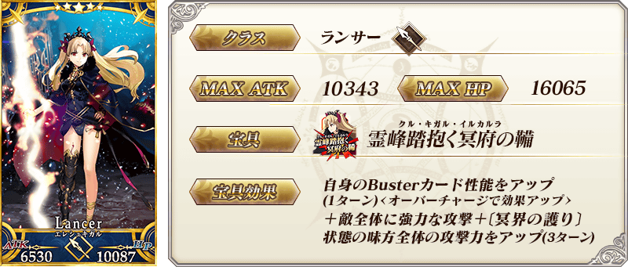
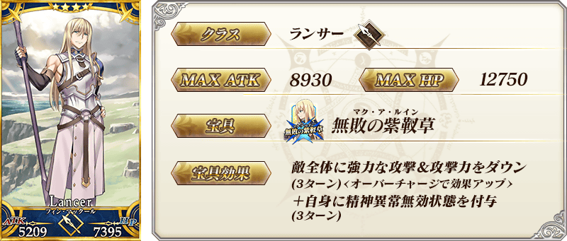
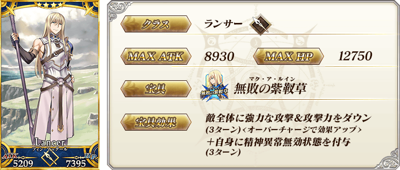
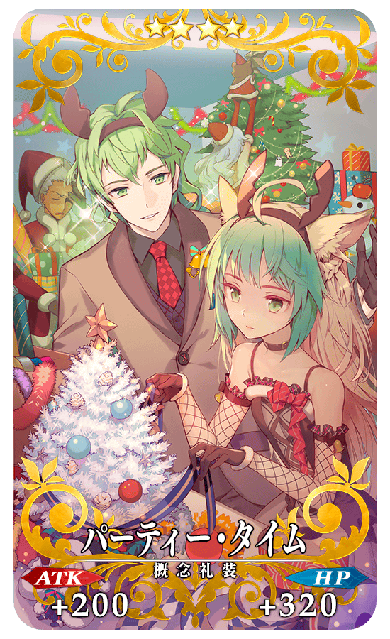
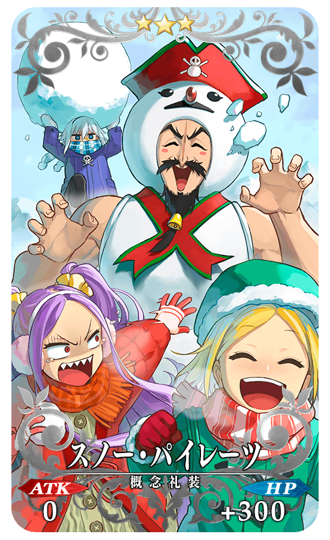
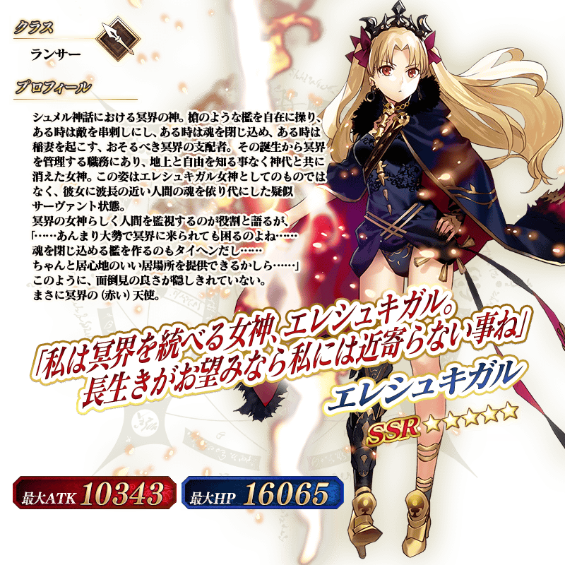

◆「1900萬DL記念Pick Up召喚」期間◆
期間:2020年2月26日(三) 17:00～3月11日(三) 11:59
舉辦期間限定「1900萬DL記念Pick Up召喚」！
為了記念1900萬DL突破，「★5(SSR)艾蕾修卡」以期間限定登場！
本次在上述再加上進行動作翻新的「★4(SR)芬恩・麥克庫爾」也Pick Up！
並且，2017年的「聖誕節2017Pick Up召喚(每日交替)」與2018年的「復刻 聖誕節2017Pick Up召喚(每日交替)」中登場的期間限定概念禮裝「★5(SSR)スターリー・ナイツ」「★4(SR)パーティー・タイム」「★3(R)スノー・パイレーツ」Pick Up！
Pick Up期間中，Pick Up對象從者與概念禮裝的出現機率提升します！
詳情請在聖晶石召喚畫面左下的召喚詳細確認。
11次召喚中確定1張★4(SR)以上和確定1位★3(R)以上的從者！ ※確定★4(SR)以上包含從者和概念禮裝。 ※本頁面皆為開發中圖片。會有與實際圖片相異的情況。
◆有關從者的注意◆
※下述的從者在Pick Up期間結束後不會追加到故事召喚。
・★5(SSR)艾蕾修卡
※下述的從者在Pick Up期間結束後仍會在故事召喚被抽出。
・★4(SR)芬恩・麥克庫爾
◆有關概念禮裝的注意◆
※「★3(R)スノー・パイレーツ」在Pick Up期間中，也能靠友情點數召喚獲得。
※請注意自友情點數召喚抽出的「★3(R)スノー・パイレーツ」在自動變還設定登錄★3(R)概念禮裝的情況，會變成自動變還的對象。
 ※上述「★5(SSR)艾蕾修卡」的卡面為靈基再臨第2階段。
 
※上述「★4(SR)芬恩・麥克庫爾」的卡面為靈基再臨第2階段。

※上述「★4(SR)芬恩・麥克庫爾」的卡面為靈基再臨第2階段。

|
★★★★★SSR |
|  |
★★★★SR |
|  |
★★★R |
 ※上述「★5(SSR)艾蕾修卡」的立繪為靈基再臨第2階段。
介紹「★5(SSR)艾蕾修卡」的寶具演出！
在「Fate/Grand Order」官方網站內的公告中，以影片公開寶具演出，敬請確認。
翻新「★4(SR)芬恩・麥克庫爾」的戰鬥動作及寶具演出！
在「Fate/Grand Order」官方網站內的公告中，以影片公開寶具演出，敬請確認。
◆翻新實施時間◆
2020年2月26日(三) 17:00～
其他還有，「1900萬DL突破宣傳活動」同時舉辦！
關於詳情，請自下述橫幅確認。